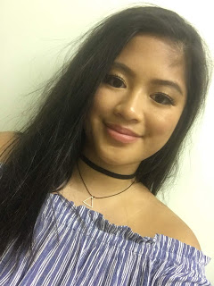

Meet the team
I’m 18 years old and I am a second year student in ITB studying CDM. I listen to different types of music, every now and then I go from pop - punk rock - r&b. I listen to random music if I like the song I add it or save it to my phone. Listening to these music genres, makes me dress somewhat like them. My taste in music and style changes every now and then, it usually depends on what I feel like wearing. I don't dress up that much, I just wear something I feel comfortable in. I don't like wearing bright colours or the colour pink, orange and yellow. Pink, Orange and Yellow are the colours I don't like so I don't wear them. I usually wear dark colours, I have a few colours but usually, it's dark. - Nhu
Im a 19 year old college student currently studying creative digital media in ITB. My likes are music specifically Fleetwood Mac, Stevie Nicks is my style icon in many ways. I love her energy and how she expresses her personality though her personal style. I don't like wearing black I prefer colour, it makes everything a bit more fun. -Emma
I'm 20 years old and I'm in my second year of Creative Digital Media in ITB. I'd best describe my style as Tomboy-ish. Most days I wear black ripped jeans with a jumper and a denim jacket or something along those lines. I listen to indie-rock music mostly bands such as Coldplay, The Killers and Kings of Leon. The main colour tones I wear would be black, red and blue. I really just wear whatever keeps me warm. Since I'm really short I always have to turn up the ends of my jeans (twice), I pretend it's just my style. I'd say I get my fashion inspiration from Instagram because most days I'm too lazy to plan an outfit myself. - Robyn
My name is Marcin and I'm 19 years old. I'm currently in my 2nd year of studying Creative Digital Media in ITB. I tend to get awkward when talking about myself but here goes nothing. When it comes to music, I listen to everything. Everything from upbeat electronic/pop music to rock & rap. My favourite band is called 30 Seconds To Mars and I've been listening to their music since the age of 8. As far as my style goes I buy over priced clothes that I probably don't need and could get for a lot cheaper in stores like TopMan but yeah (I wasn't expecting to treat this as a therapy confession) Everything I own is black, white and grey. Occasionally I'll wear some colour but thats rare. Being a millennial I mostly get my inspiration from social media. - Marcin